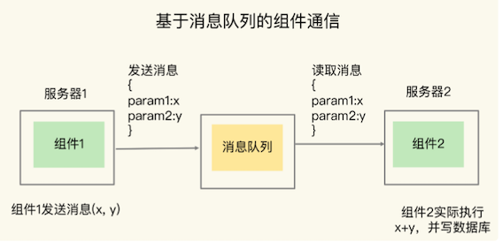
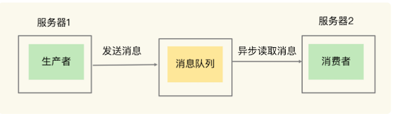
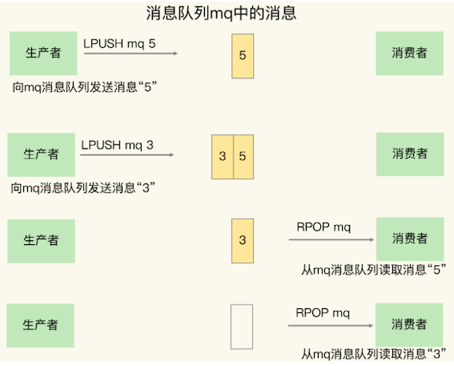
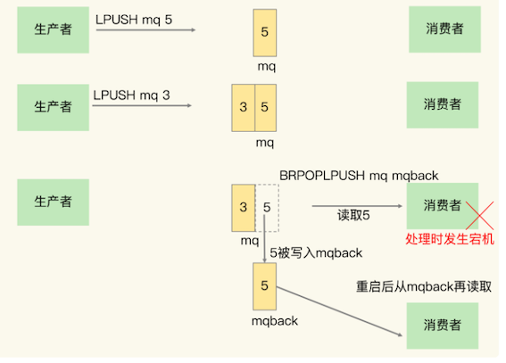

第五节 如何使用redis实现消息队列的需求
多分布式系统必备的一个基础软件就是消息队列
消息队列要能支持组件通信消息的快速读写，而 Redis 本身支持数据的高速访问，正好可以满足消息队列的读写性能需求。
Redis 适合做消息队列吗？
- 消息队列的消息存取需求是什么？
- Redis 如何实现消息队列的需求？
1、消息队列的消息存取需求
在分布式系统中，当两个组件要基于消息队列进行通信时，一个组件会把要处理的数据以消息的形式传递给消息队列，然后，这个组件就可以继续执行其他操作了；
远端的另一个组件从消息队列中把消息读取出来，再在本地进行处理。
- 假设组件 1 需要对采集到的数据进行求和计算，并写入数据库，但是，消息到达的速度很快，组件 1 没有办法及时地既做采集，又做计算，并且写入数据库。
- 所以，我们可以使用基于消息队列的通信，让组件 1 把数据 x 和 y 保存为 JSON 格式的消息，再发到消息队列，这样它就可以继续接收新的数据了。
- 组件 2 则异步地从消息队列中把数据读取出来，在服务器 2 上进行求和计算后，再写入数据库。这个过程如下图所示：

我们一般把消息队列中发送消息的组件称为生产者（例子中的组件 1），把接收消息的组件称为消费者（例子中的组件 2），下图展示了一个通用的消息队列的架构模型：

在使用消息队列时，消费者可以异步读取生产者消息，然后再进行处理。
这样一来，即使生产者发送消息的速度远远超过了消费者处理消息的速度，生产者已经发送的消息也可以缓存在消息队列中，避免阻塞生产者，这是消息队列作为分布式组件通信的一大优势
不过，消息队列在存取消息时，必须要满足三个需求，分别是消息保序、处理重复的消息和保证消息可靠性。
1-1 需求一：消息保序
虽然消费者是异步处理消息，但是，消费者仍然需要按照生产者发送消息的顺序来处理消息，避免后发送的消息被先处理了。
对于要求消息保序的场景来说，一旦出现这种消息被乱序处理的情况，就可能会导致业务逻辑被错误执行，从而给业务方造成损失。
更新商品库存的场景。
假设生产者负责接收库存更新请求，消费者负责实际更新库存，现有库存量是 10。
生产者先后发送了消息 1 和消息 2，消息 1 要把商品 X 的库存记录更新为 5，消息 2 是把商品 X 库存更新为 3。
如果消息 1 和 2 在消息队列中无法保序，出现消息 2 早于消息 1 被处理的情况，那么，很显然，库存更新就出错了。这是业务应用无法接受的。
解决方案：不要把更新后的库存量作为生产者发送的消息，而是把库存扣除值作为消息的内容
这样一来，消息 1 是扣减库存量 5，消息 2 是扣减库存量 2。如果消息 1 和消息 2 之间没有库存查询请求的话，即使消费者先处理消息 2，再处理消息 1，这个方案也能够保证最终的库存量是正确的，也就是库存量为 3。
但是，我们还需要考虑这样一种情况：假如消费者收到了这样三条消息：消息 1 是扣减库存量 5，消息 2 是读取库存量，消息 3 是扣减库存量 2
如果消费者先处理了消息 3（把库存量扣减 2），那么库存量就变成了 8。然后，消费者处理了消息 2，读取当前的库存量是 8，这就会出现库存量查询不正确的情况。
从业务应用层面看，消息 1、2、3 应该是顺序执行的，所以，消息 2 查询到的应该是扣减了 5 以后的库存量，而不是扣减了 2 以后的库存量。所以，用库存扣除值作为消息的方案，在消息中同时包含读写操作的场景下，会带来数据读取错误的问题。
1-2 需求二：重复消息处理
消费者从消息队列读取消息时，有时会因为网络堵塞而出现消息重传的情况。此时，消费者可能会收到多条重复的消息。对于重复的消息，消费者如果多次处理的话，就可能造成一个业务逻辑被多次执行，如果业务逻辑正好是要修改数据，那就会出现数据被多次修改的问题了。
还是以库存更新为例，假设消费者收到了一次消息 1，要扣减库存量 5，然后又收到了一次消息 1，那么，如果消费者无法识别这两条消息实际是一条相同消息的话，就会执行两次扣减库存量 5 的操作，此时，库存量就不对了。这当然也是无法接受的。
1-3 需求三：消息可靠性保证
另外，消费者在处理消息的时候，还可能出现因为故障或宕机导致消息没有处理完成的情况。此时，消息队列需要能提供消息可靠性的保证，也就是说，当消费者重启后，可以重新读取消息再次进行处理，否则，就会出现消息漏处理的问题了。
Redis 的 List 和 Streams 两种数据类型，就可以满足消息队列的这三个需求。
2、基于 List 的消息队列解决方案
List 本身就是按先进先出的顺序对数据进行存取的，所以，如果使用 List 作为消息队列保存消息的话，就已经能满足消息保序的需求了。
具体来说，生产者可以使用 LPUSH 命令把要发送的消息依次写入 List，而消费者则可以使用 RPOP 命令，从 List 的另一端按照消息的写入顺序，依次读取消息并进行处理。
如下图所示，生产者先用 LPUSH 写入了两条库存消息，分别是 5 和 3，表示要把库存更新为 5 和 3；
消费者则用 RPOP 把两条消息依次读出，然后进行相应的处理。

2-1 消费者读取数据性能风险
在生产者往 List 中写入数据时，List 并不会主动地通知消费者有新消息写入，如果消费者想要及时处理消息，就需要在程序中不停地调用 RPOP 命令（比如使用一个 while(1) 循环）。如果有新消息写入，RPOP 命令就会返回结果，否则，RPOP 命令返回空值，再继续循环。
所以，即使没有新消息写入 List，消费者也要不停地调用 RPOP 命令，这就会导致消费者程序的 CPU 一直消耗在执行 RPOP 命令上，带来不必要的性能损失。
2-2 BRPOP
为了解决这个问题，Redis 提供了 BRPOP 命令。
BRPOP 命令也称为阻塞式读取，客户端在没有读到队列数据时，自动阻塞，直到有新的数据写入队列，再开始读取新数据。
和消费者程序自己不停地调用 RPOP 命令相比，这种方式能节省 CPU 开销。
2-3 消费者程序本身能对重复消息进行判断
- 一方面，消息队列要能给每一个消息提供全局唯一的 ID 号；
- 另一方面，消费者程序要把已经处理过的消息的 ID 号记录下来。
当收到一条消息后，消费者程序就可以对比收到的消息 ID 和记录的已处理过的消息 ID，来判断当前收到的消息有没有经过处理。如果已经处理过，那么，消费者程序就不再进行处理了。
这种处理特性也称为幂等性，幂等性就是指，对于同一条消息，消费者收到一次的处理结果和收到多次的处理结果是一致的。
不过，List 本身是不会为每个消息生成 ID 号的，所以，消息的全局唯一 ID 号就需要生产者程序在发送消息前自行生成。生成之后，我们在用 LPUSH 命令把消息插入 List 时，需要在消息中包含这个全局唯一 ID。
例如，我们执行以下命令，就把一条全局 ID 为 101030001、库存量为 5 的消息插入了消息队列：
LPUSH mq "101030001:stock:5"
(integer) 1
2-4 List 类型是如何保证消息可靠性: BRPOPLPUSH
当消费者程序从 List 中读取一条消息后，List 就不会再留存这条消息了。
所以，如果消费者程序在处理消息的过程出现了故障或宕机，就会导致消息没有处理完成，那么，消费者程序再次启动后，就没法再次从 List 中读取消息了。
为了留存消息，List 类型提供了 BRPOPLPUSH 命令，这个命令的作用是让消费者程序从一个 List 中读取消息，同时，Redis 会把这个消息再插入到另一个 List（可以叫作备份 List）留存。
这样一来，如果消费者程序读了消息但没能正常处理，等它重启后，就可以从备份 List 中重新读取消息并进行处理了。
展示了使用 BRPOPLPUSH 命令留存消息，以及消费者再次读取消息的过程

- 生产者先用 LPUSH 把消息“5”“3”插入到消息队列 mq 中。
- 消费者程序使用 BRPOPLPUSH 命令读取消息“5”
- 同时，消息“5”还会被 Redis 插入到 mqback 队列中。
- 如果消费者程序处理消息“5”时宕机了，等它重启后，可以从 mqback 中再次读取消息“5”，继续处理。
在用 List 做消息队列时，我们还可能遇到过一个问题：生产者消息发送很快，而消费者处理消息的速度比较慢，这就导致 List 中的消息越积越多，给 Redis 的内存带来很大压力。
到 Redis 从 5.0 版本开始提供的 Streams 数据类型了。
和 List 相比，Streams 同样能够满足消息队列的三大需求。而且，它还支持消费组形式的消息读取。接下来，我们就来了解下 Streams 的使用方法。
3、基于 Streams 的消息队列解决方案
Streams 是 Redis 专门为消息队列设计的数据类型，它提供了丰富的消息队列操作命令。
- XADD：插入消息，保证有序，可以自动生成全局唯一 ID；
- XREAD：用于读取消息，可以按 ID 读取数据；
- XREADGROUP：按消费组形式读取消息；
- XPENDING 和 XACK：XPENDING 命令可以用来查询每个消费组内所有消费者已读取但尚未确认的消息，而 XACK 命令用于向消息队列确认消息处理已完成。
3-1 XADD
XADD 命令可以往消息队列中插入新消息，消息的格式是键 - 值对形式。对于插入的每一条消息，Streams 可以自动为其生成一个全局唯一的 ID。
比如说，我们执行下面的命令，就可以往名称为 mqstream 的消息队列中插入一条消息，消息的键是 repo，值是 5。
- 其中，消息队列名称后面的
*，表示让 Redis 为插入的数据自动生成一个全局唯一的 ID，例如“1599203861727-0”。 - 当然，我们也可以不用
*，直接在消息队列名称后自行设定一个 ID 号，只要保证这个 ID 号是全局唯一的就行。不过，相比自行设定 ID 号，使用*会更加方便高效。
XADD mqstream * repo 5
"1599203861727-0"
可以看到，消息的全局唯一 ID 由两部分组成，
- 第一部分“1599203861727”是数据插入时，以毫秒为单位计算的当前服务器时间，第二部分表示插入消息在当前毫秒内的消息序号，这是从 0 开始编号的。
- 例如，“1599203861727-0”就表示在“1599203861727”毫秒内的第 1 条消息。
3-2 XREAD
XREAD 在读取消息时，可以指定一个消息 ID，并从这个消息 ID 的下一条消息开始进行读取。
例如，我们可以执行下面的命令，从 ID 号为 1599203861727-0 的消息开始，读取后续的所有消息（示例中一共 3 条）。
XREAD BLOCK 100 STREAMS mqstream 1599203861727-0
1) 1) "mqstream"
2) 1) 1) "1599274912765-0"
2) 1) "repo"
2) "3"
2) 1) "1599274925823-0"
2) 1) "repo"
2) "2"
3) 1) "1599274927910-0"
2) 1) "repo"
2) "1"
另外，消费者也可以在调用 XRAED 时设定 block 配置项，实现类似于 BRPOP 的阻塞读取操作。
当消息队列中没有消息时，一旦设置了 block 配置项，XREAD 就会阻塞，阻塞的时长可以在 block 配置项进行设置。
XREAD block 10000 streams mqstream $
(nil)
(10.00s)
3-3 XGROUP 创建消费组
Streams 本身可以使用 XGROUP 创建消费组，创建消费组之后，Streams 可以使用 XREADGROUP 命令让消费组内的消费者读取消息，
例如，我们执行下面的命令，创建一个名为 group1 的消费组，这个消费组消费的消息队列是 mqstream。
XGROUP create mqstream group1 0
OK
然后，我们再执行一段命令，让 group1 消费组里的消费者 consumer1 从 mqstream中读取所有消息，其中，命令最后的参数“>”，表示从第一条尚未被消费的消息开始读取。
因为在 consumer1 读取消息前，group1 中没有其他消费者读取过消息，所以，consumer1 就得到 mqstream 消息队列中的所有消息了（一共 4 条）。
XREADGROUP group group1 consumer1 streams mqstream >
1) 1) "mqstream"
2) 1) 1) "1599203861727-0"
2) 1) "repo"
2) "5"
2) 1) "1599274912765-0"
2) 1) "repo"
2) "3"
3) 1) "1599274925823-0"
2) 1) "repo"
2) "2"
4) 1) "1599274927910-0"
2) 1) "repo"
2) "1"
需要注意的是，消息队列中的消息一旦被消费组里的一个消费者读取了，就不能再被该消费组内的其他消费者读取了。
比如说，我们执行完刚才的 XREADGROUP 命令后，再执行下面的命令，让 group1 内的 consumer2 读取消息时，consumer2 读到的就是空值，因为消息已经被 consumer1读取完了，如下所示：
XREADGROUP group group1 consumer2 streams mqstream 0
1) 1) "mqstream"
2) (empty list or set)
使用消费组的目的是让组内的多个消费者共同分担读取消息，所以，我们通常会让每个消费者读取部分消息，从而实现消息读取负载在多个消费者间是均衡分布的。例如，我们执行下列命令，让 group2 中的 consumer1、2、3 各自读取一条消息。
XREADGROUP group group2 consumer1 count 1 streams mqstream >
1) 1) "mqstream"
2) 1) 1) "1599203861727-0"
2) 1) "repo"
2) "5"
XREADGROUP group group2 consumer2 count 1 streams mqstream >
1) 1) "mqstream"
2) 1) 1) "1599274912765-0"
2) 1) "repo"
2) "3"
XREADGROUP group group2 consumer3 count 1 streams mqstream >
1) 1) "mqstream"
2) 1) 1) "1599274925823-0"
2) 1) "repo"
2) "2"
3-4 XPENDING 和 XACK
为了保证消费者在发生故障或宕机再次重启后，仍然可以读取未处理完的消息，Streams 会自动使用内部队列（也称为 PENDING List）留存消费组里每个消费者读取的消息，直到消费者使用 XACK 命令通知 Streams“消息已经处理完成”。
- 如果消费者没有成功处理消息，它就不会给 Streams 发送 XACK 命令，消息仍然会留存。
- 此时，消费者可以在重启后，用 XPENDING 命令查看已读取、但尚未确认处理完成的消息。
如果消费者没有成功处理消息，它就不会给 Streams 发送 XACK命令，消息仍然会留存。此时，消费者可以在重启后，用 XPENDING 命令查看已读取、但尚未确认处理完成的消息。
XPENDING mqstream group2
1) (integer) 3
2) "1599203861727-0"
3) "1599274925823-0"
4) 1) 1) "consumer1"
2) "1"
2) 1) "consumer2"
2) "1"
3) 1) "consumer3"
2) "1"
如果我们还需要进一步查看某个消费者具体读取了哪些数据，可以执行下面的命令：
XPENDING mqstream group2 - + 10 consumer2
1) 1) "1599274912765-0"
2) "consumer2"
3) (integer) 513336
4) (integer) 1
可以看到，consumer2 已读取的消息的 ID 是 1599274912765-0
一旦消息 1599274912765-0 被 consumer2 处理了，consumer2 就可以使用 XACK 命令通知 Streams，然后这条消息就会被删除。当我们再使用 XPENDING 命令查看时，就可以看到，consumer2 已经没有已读取、但尚未确认处理的消息了。
XACK mqstream group2 1599274912765-0
(integer) 1
XPENDING mqstream group2 - + 10 consumer2
(empty list or set)
4、本节小结
分布式系统组件使用消息队列时的三大需求：消息保序、重复消息处理和消息可靠性保证，这三大需求可以进一步转换为对消息队列的三大要求：消息数据有序存取，消息数据具有全局唯一编号，以及消息数据在消费完成后被删除。

其实，关于 Redis 是否适合做消息队列，业界一直是有争论的。很多人认为，要使用消息队列，就应该采用 Kafka、RabbitMQ 这些专门面向消息队列场景的软件，而 Redis 更加适合做缓存。
Redis 是一个非常轻量级的键值数据库，部署一个 Redis 实例就是启动一个进程，部署 Redis 集群，也就是部署多个 Redis 实例。而 Kafka、RabbitMQ 部署时，涉及额外的组件，例如 Kafka 的运行就需要再部署 ZooKeeper。相比 Redis 来说，Kafka 和 RabbitMQ 一般被认为是重量级的消息队列。
如果分布式系统中的组件消息通信量不大，那么，Redis 只需要使用有限的内存空间就能满足消息存储的需求，而且，Redis 的高性能特性能支持快速的消息读写，不失为消息队列的一个好的解决方案。